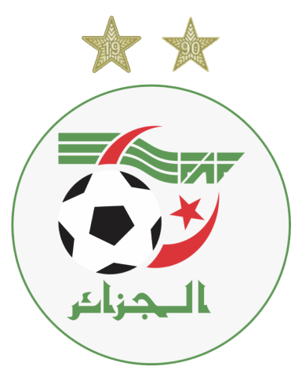
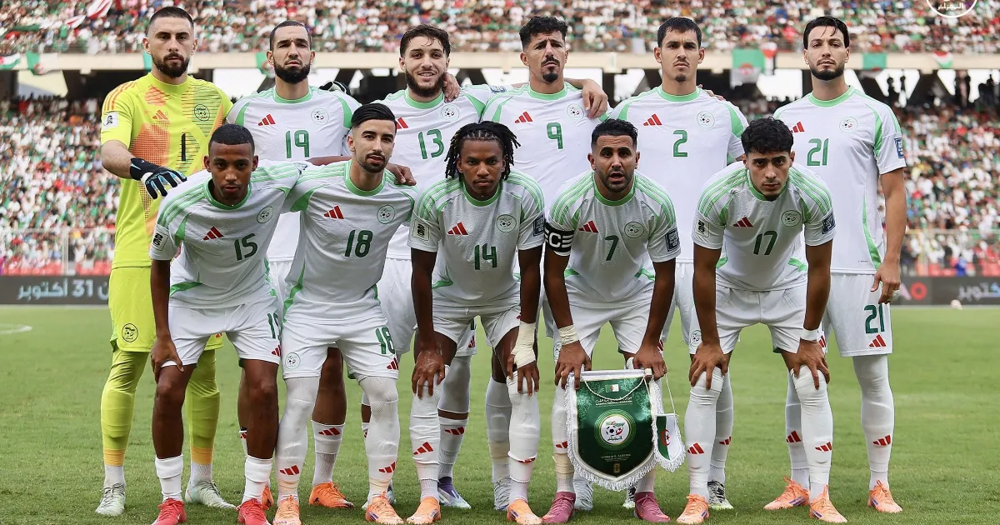
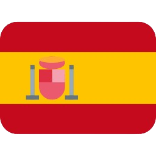
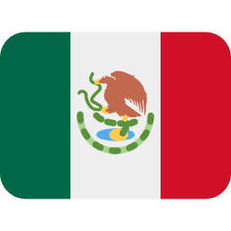

Argélia
Argélia
4
Participações
(1982-2014)

África
A seleção argelina de futebol, conhecida como os "Raposos do Deserto", representa a Argélia nas competições internacionais. O país conquistou a Copa Africana de Nações em 1990 e em 2019, consolidando-se como uma das potências do futebol africano. Nas Copas do Mundo, a Argélia ficou famosa pela campanha de 2014 no Brasil, quando chegou às oitavas de final com atuações marcantes.

Goleiros:
Defensores:
Meio-campistas:
Atacantes:
Participações
(1982-2014)
Títulos
Melhor campanha
Primeira
participação
| Ano | Sede | Resultado |
|---|---|---|
| 1982 |  Espanha | Fase de Grupos |
| 1986 |  México | Fase de Grupos |
| 2010 | Fase de Grupos | |
| 2014 | Oitavas de Final |
| Participações | 4 |
| Títulos | 0 |
| Vice-campeonatos | 0 |
| 3º Lugar | 0 |
| 4º Lugar | 0 |
| Melhor campanha | Oitavas de Final (2014) |
| Jogos disputados | 13 |
| Vitórias | 4 |
| empates | 2 |
| Derrotas | 7 |
calendar_monthJunho - Julho de 2026
location_onMéxico, Estados Unidos e Canadá